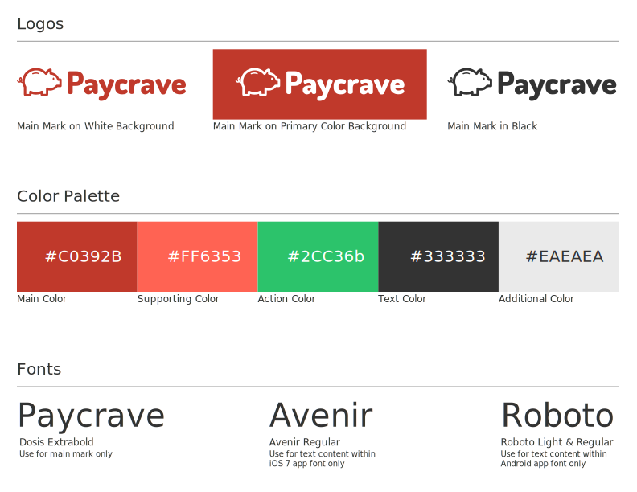

User Stories
Paycrave was my first UX design project for Bloc. The use case presented stated the following: "Several mobile payment solutions exist currently, like Square Cash or PayPal mobile. However when pertaining to food trucks, a well-designed solution hasn't been created. This consumer app allows users to discover nearby food trucks, and select food to purchase. Users can also view their previous transactions, and provide feedback for each food truck they've purchased from." I began constructing user flows for each story that was presented.

Style Guide
For this project with Bloc, a styleguide was provided. I used the logo they created, although I layered it to provide a raised effect. I also incorporated the suggested color palette.
Building the experience
I began designing mockups for the Paycrave app, and used both dark and light schemes for the inital search pages. I requested a preference test on Usability Hub in order to decide which design was would provide a better experience. The light version was chosen 75% while the dark version was only chosen 25% of the time. Needless to say, I used the light version.